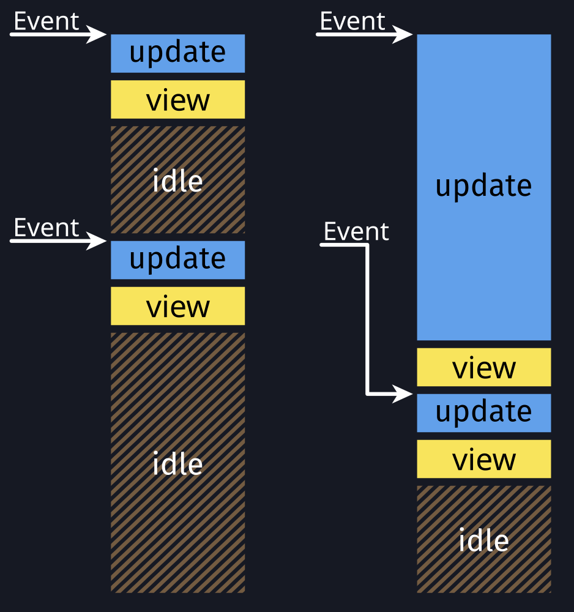

Introduction
Most user inputs are fairly easy to process. After receiving a message, you process it in the update function and update the view. Everything only takes a couple of milliseconds at most, so the user won't even notice the slight delay.
However, when you have to perform complex calculations or I/O-bound operations that take more than a couple of milliseconds to complete, the user will start noticing that the app doesn't feel reactive or "snappy" anymore. For example, such operations are performing network requests, filesystems operations or calculating the last digit of π.
To better visualize what happens, let's look at the following image. The expected behavior is on the left, where processing of updates is fast and the app spends most of the time idle, waiting for new user inputs (aka events). Yet on the right, the update function is very slow and blocks the entire application so that no other events can be processed in the meantime and the view update is delayed.
The behavior on the right will freeze the entire application and should be avoided. Fortunately, Relm4 gives you plenty of options to keep your application responsive.
Understanding the problem
In general, we can divide the problem into two categories:
- CPU-bound operations take a lot of time because actual work needs do be done by the CPU.
- I/O-bound operations take a lot of time because we have to wait for something to happen, for example, a response from a server. This means that we have CPU resources to do other things in the meantime, but to use them, we need a mechanism like async/await.
CPU-bound and other synchronous operations
Let's look at an example of a CPU-bound operation.
For an app that generates cryptographic keys, you might define a generate_rsa_key() function.
This function takes some time to compute because generating the key is a difficult calculation so we can treat it as if it was implemented like this:
fn generate_rsa_key() {
std::thread::sleep(Duration::from_secs(10));
}If our component receives a GenerateKey message, we start generating the key.
fn update(&mut self, msg: Self::Input, _sender: ComponentSender<Self>) {
match msg {
AppMsg::GenerateKey => {
self.rsa_key = generate_rsa_key();
}
}
}Unfortunately, this will freeze our app. There's no trick to avoid this, the CPU must do a lot of work to calculate the result. However, we can offload this work to other threads to keep our application responsive.
Possible solutions for this problem are:
- Workers: A component without widgets that runs on its own thread
- Commands: Offload tasks to a runtime in the background and receive a message when the task completes
Both are covered in the following chapters.
I/O-bound and other async operations
Let's say we also need to perform a web-request to fetch existing encryption keys from a server. In theory, we could use a blocking HTTP client which would put us in the same situation as before. However, using async/await allows us to use the CPU for other things while we're waiting for the response. The resulting asynchronous function could look like this.
async fn fetch_rsa_key() {
tokio::time::sleep(Duration::from_secs(10)).await;
}Since we now have an asynchronous function, we can't simply call it like a regular function. Again, there are two options to make this work:
- Async components and factories: Asynchronous traits for components and factories
- Commands: Offload tasks to a runtime in the background and receive a message when the task completes